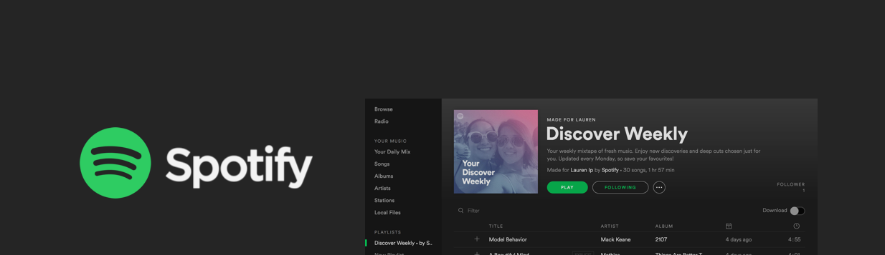
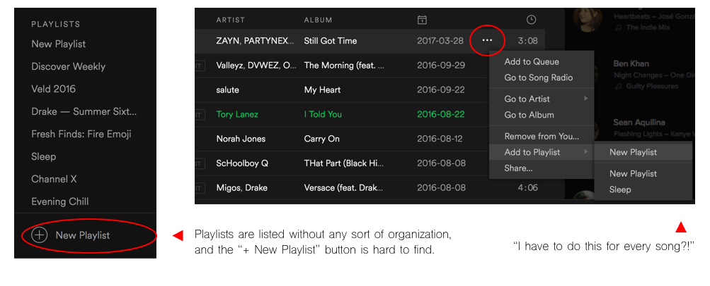
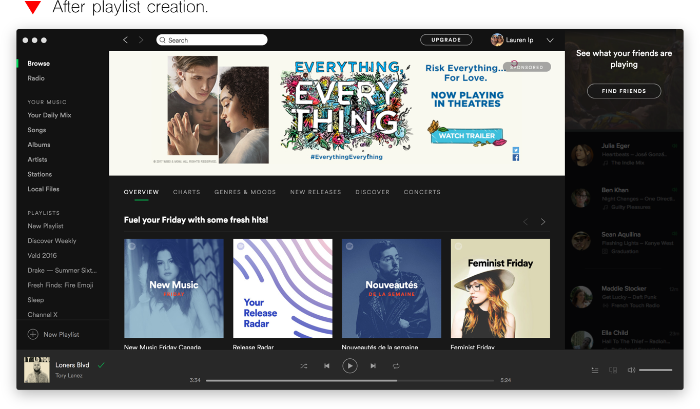
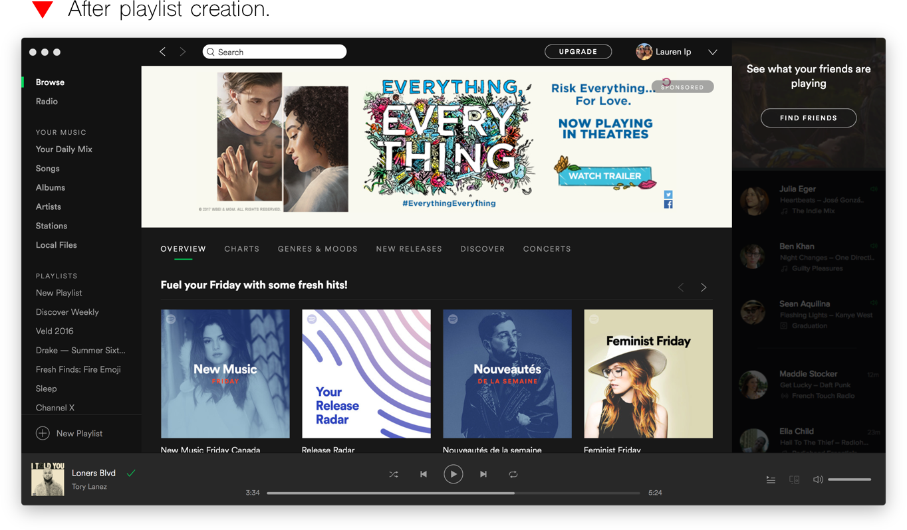
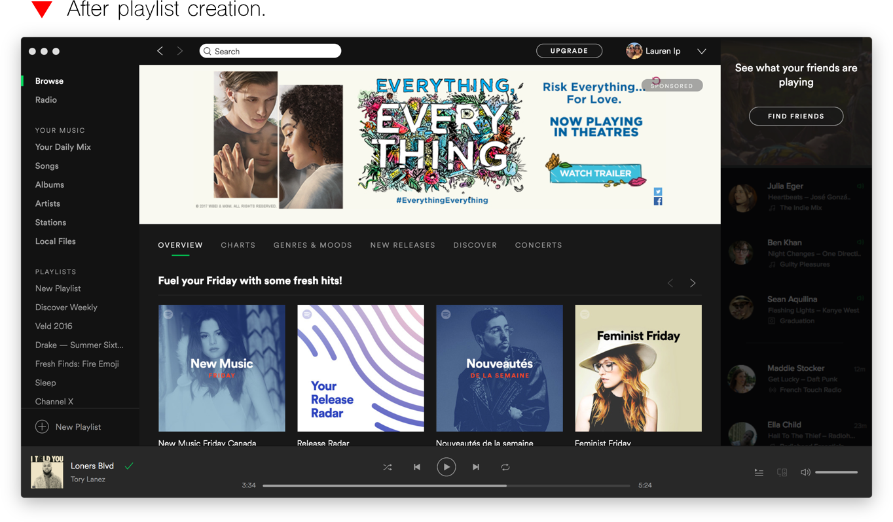

As part of a Human Centered Systems Design course I took in the Winter of 2016, we were tasked to analyze, test, and redesign the interface of a music streaming service in order to improve its overall usability. My team chose to redesign Spotify, our long-time favourite music discovery platform.

THE CHALLENGE
Streamlining the creation of a perfect playlist
Although one of the most popular music streaming services out there, Spotify's current desktop app interface design is far from perfect. There are plenty of features that could have been improved, but for the scope of this project we chose to focus on one we thought was most important: the ability to create and add songs to a new playlist.
MY ROLE
Project lead
I took on the role of project lead within our group, coordinating research tasks and driving our design direction. I was also responsible for creating the final set of low-fidelity wireframes to be used in our usability testing sessions.
THE APPROACH
Strategic, methodical and detail-oriented
Task Analysis
We started by reviewing how Spotify currently works, using a Hierarchical Task Analysis diagram to visually break down its functions into subtasks.
After observing how users create a new playlist, we found several issues with the interface:
Visual clutter—-it can take a while to find certain buttons on the screen (e.g., “New Playlist” button located at the bottom of the sidebar menu). Spotify’s interface often presents a lot of content at once, and while this allows for quick access of information, it also makes it more difficult to find exactly what you’re looking for.

Disorganization of playlist information—-there is no centralized location for playlist information beyond the cluttered list presented in the sidebar. As a user’s playlist base grows, it becomes more and more frustrating to organize titles.

Disconnect between related tasks—-there is a disconnect between creating a playlist and then adding songs to it afterward. Once a playlist is created, user guidance ends rather abruptly; there are no obvious instructions on how to add songs to that playlist, disrupting task flow and giving users a hard time figuring out what to do next. The existing process also requires users to add songs individually by clicking on the “…” (more) icon each time, which becomes quite tedious.
Lack of system feedback—-this is an especially glaring issue because of the navigational complexity required as a result of #3 above. There is little that lets the user know an action was completed successfully, whether it’s creating a playlist or adding a song. This just adds confusion, makes the user doubt the system, and can cause unnecessary duplicate actions.
Idea Generation
Having selected issues which we thought needed the most attention, we then brainstormed ways of solving each issue. We asked ourselves hypothetical questions such as “What would be more convenient?”, “What is more intuitive?” or “What is confusing about this task?”.
After discussing our individual sketches and design alternatives, we combined the most impactful solutions to form a low-fidelity prototype.
Paper Prototyping
The prototype integrates several aspects of each design alternative, which were chosen based on their cohesiveness, adherence to design principles and Nielsen’s Usability Heuristics, as well as overall contribution to improving task flow. The sketches shown below outline the features of our proposed interface design as a user attempts to create and add songs to a new playlist.
Usability Testing
To see if our proposed design was effective, we conducted a comparative usability test, identifying strengths and weaknesses along the way. We tested six users from various age groups having different levels of music-streaming experience; since participant size had to be minimized due to time constraints, we chose to base our test on Nielsen’s 5-user assumption--that just 5 participants should uncover about 80% of usability problems.
For each design, users were given instructions to create a new playlist and add songs to it, and after completing all test runs, users were given a survey to complete. Test data was collected using a variety of both quantitative and qualitative methods. Qualitative methods (such as video recordings, notes on user thought processes, user comments and suggestions) helped measure the usability of our proposed interface as a standalone design, while quantitative methods (such as time until task completion, number of prompts needed, design rankings) were used to compare the proposed design to the current interface.
OUTCOME
Improved overall usability by 49%
Our results showed a strong overall preference for the proposed design. Not only did the survey question rankings surpass those of the current interface, we also found that users were able to perform the task given to them 49% faster using the proposed design versus the current interface.
Although the prototype compared well quantitatively, our qualitative results did highlight a few improvement opportunities in our design. Using retrospective video evidence and written user feedback, we were able to identify a few usability issues that could be addressed in future iterations of the design, such as giving users too much to choose from when using our quick-add function, or having unclear button labels.

 
